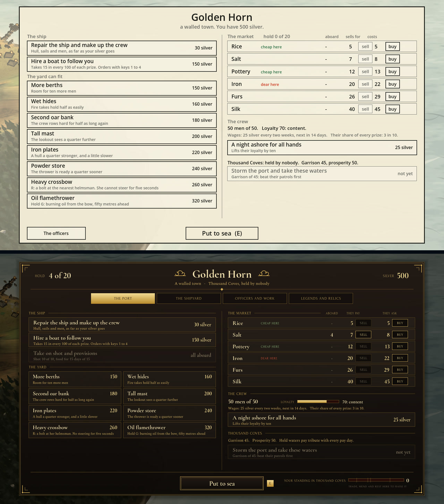

Прошло сорок два часа, осталось тридцать. Вчера мы писали, как один человек и один ИИ делают две игры сразу. Несколько человек сказали, что вышло слишком длинно, так что сегодня короче и больше движущихся картинок.

В первый день машина строила. Во второй человек говорил «нет». Почти всё, что ниже, началось с одной его фразы, которая начиналась с «мне не нравится» или «это не то».
«Железная джонка»
Во вчерашней игре в углу висела серая коробка с состоянием корабля. Он назвал её неприемлемой. Машина нарисовала на одной странице шесть интерфейсов, он показал на чёрный лак с золотом, и все экраны были пересобраны за один заход. Его ответ: «Уже лучше. Интерфейс мне нравится».

Потом он открыл папку с картинами-целями из первого дня и спросил, похож ли абордаж на четвёртую. Не похож: абордаж был тремя полосками, которые заполняются где-то вдалеке. Теперь камера опускается, корабли стянуты борт к борту, и обе команды дерутся на чужой палубе.
Другие его фразы и то, во что они превратились:
- «“ПАРУС!” — это неинформативно». Теперь вперёдсмотрящий сообщает тем больше, чем ближе парус: сначала просто парус, потом размер и курс, потом флаг, потом имя, команду и груз.
- «Очень мало движения». Купцы на маршрутах между портами, рыбацкие лодки, патрули того, кто держит воду, и пираты, которые нападают на всех.
- «Надо двигаться дальше». Реки, в которые можно зайти, с городами и отмелями. Пять корпусов, которые заказывают на верфях. Своя бухта, которую можно застроить. Деревни, которые можно ограбить или обложить данью. Штурм порта в три боя. День, ночь и погода.
Ещё он попросил то, чего нет у прототипа и что есть у игры: главное меню, три плавания в соседних слотах, трёх капитанов на выбор, архив, который хранит найденное между плаваниями, и легенды с реликвиями, которые дают постоянные бонусы и растут вместе с вашей репутацией в этих водах. И одно правило про темп, после фразы «лодка должна ощущаться быстрой»: время идёт тем быстрее, чем выше камера, на самом верху вдесятеро, а руль на любой скорости отвечает одинаково.
Вчера мы писали, что машина не слышит и никто не знает, хорош ли звук. Он надел наушники. Нехорош: «слишком много гребли, громко и без остановки». Теперь море — это запись, а музыку играют инструменты XIII века: гуцинь, сяо, каягым, боевые барабаны.
«Правый руль: Зелёный угол»
У игры про машины появилось второе имя. По-русски она остаётся «Правый руль: Зелёный угол», для всех остальных это JDM Car Lot Tycoon. И у неё теперь интерфейс, который он выбрал вчера: из пикселей, как мир под ним, и вкладки в нём вообще без слов. Дизайнер, сказавший «видно, что это Claude», был прав насчёт текста, так что бо́льшая его часть ушла в картинки. Друг из Владивостока просил разнообразия: теперь в игре 164 модели в 16 цветах, с комплектациями и местными прозвищами, которые ещё должен проверить кто-то местный.

Вчера мы цитировали его решение в одно слово: «Рубли.» Машина сделала всё как следует: уличный курс по месяцам, старые рубли, деноминация 1998 года. Он сыграл и написал: «Верни доллары. Это добавляет целую мини-игру с курсом, я в ней не уверен». Доллары вернулись, рубли стали переключателем в настройках. Решение живёт до тех пор, пока человек в него не сыграл.
«Порт — это порт, а площадка наверху, на сопках». Раньше площадка и причал были на одной картинке. Теперь это два места. В день прихода парохода вы спускаетесь в порт, а купленные машины колонной едут наверх.
Сопки получились с третьей попытки. Настоящий «Зелёный угол» — это террасы с машинами вверх по склону, а машина сначала нарисовала там пятиэтажки. «Странно, не к месту». Теперь сопки — это ступени, на каждой два ряда машин и проезд, а ниже дороги стоят площадки других торговцев.
Ночная смена
В субботу пиратская игра получила одно постоянное распоряжение на те часы, когда никто не смотрит: продолжай партиями, не спрашивая, пока не станет похоже на картины-цели, и каждую партию проверяй и выкладывай. Между двумя и тремя часами ночи в воскресенье за один час было сохранено четырнадцать версий: набеги, работа от городов, туман, служба хану, своя бухта, пиратские капитаны с именами, шесть народов побережья.
У игры про машины своя версия того же. Каждая сборка, прошедшая проверки, сама оказывается у него на телефоне, а он отвечает, когда проснётся.
Это честный риск такой работы. Машина теперь строит быстрее, чем один человек успевает играть, и многое из построенного за ночь всё ещё ждёт его. Всё, во что он не сыграл, — догадка.
Где машина ошиблась сегодня
- Экран чернел. На его телефоне вся картинка мигала чёрным при каждом щипке. Проверки машины идут без экрана и ничего не видели. Теперь есть проверка, которая делает щипок на настоящем рендере и падает на тёмном кадре.
- Она была слишком строгой. Её попросили, чтобы машины ездили реалистично, и она написала такие аккуратные правила проезда, что машины простояли в пробке игровую неделю. Новое правило — его: «Должно быть близко к правде. Пусть проедут друг сквозь друга и едут себе дальше».
- Она построила системы, которые ничего не делали. Мануалы, которые собирают, находки на полке, пометки в аукционных листах — всё было, и ничего не влияло на игру. «Системы не дают бонуса». Теперь с мануалом ремонт этой модели дешевле и быстрее.
- Браузерная сборка еле ползла. Двадцать кадров в секунду на ноутбучной графике. Машина не гадала, а измерила: треть каждого кадра уходила на сглаживание краёв, которого никто бы не хватился. Теперь шестьдесят.
- Она перепутала имя. Целый день машина говорила человеку, что дядю в игре про машины зовут Игорь. В данных самой игры он с самого начала был Мишей.
Второй день в цифрах
- «Железная джонка»: ещё 44 сохранённые версии, код вырос вдвое, примерно до 19 000 строк, проверок 21 вместо 12.
- «Зелёный угол»: сборка 7 стала сборкой 23, моделей машин 164 вместо 78.
- Решений, отменённых тем, кто их принял: одно. Выброшенных интерфейсов: два.
Осталось тридцать часов. Обе игры уходят жюри в понедельник вечером по Владивостоку. Мы делаем игры открыто и меняем их по тому, что нам говорят, — длину этих постов тоже: contact@goldenharbourgames.com. День третий — завтра.